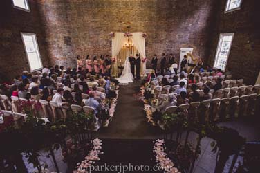
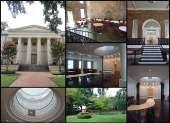

Plan Your Visit to the Old Medical College
The Old Medical College of Georgia, a National Historic Landmark, is located at 598 Telfair Street. The structure is easy to view from the sidewalk and is within the boundaries of the Augusta Downtown Historic District. It is open for self-guided tours by appointment only, Monday-Friday, 9:00am to 12:00 noon. Call 706-854-0924. Free. The Old Medical College has been documented by the National Park Service's Historic American Buildings Survey.
